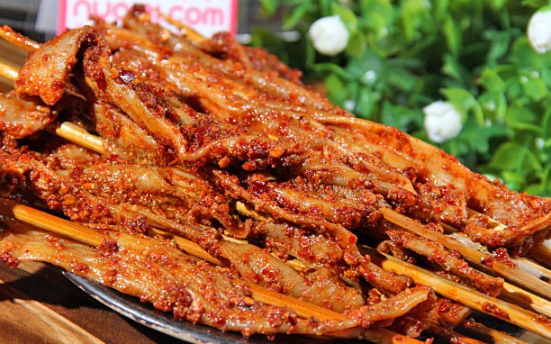

灌县老妈全国加盟3000家,小餐饮也能成为餐饮巨鳄
来源：灌县老妈 时间：2017-04-17 11:37:34
灌县老妈麻辣串加盟品牌开到了3000家店，往前数十年，估计是没人会想到可以开出千家店的。我知道，麻辣烫的发展一直充当着：混乱、品质差、冷门等等，然而我们确一直相信依然有崛起的机会。现在，加盟店越来越多不就成功的说明了这一问题吗。
现在小吃行业发展是越来越好的，即使一个小到几个平方的店面生意也是火到不行，对创业者来说小而美、品牌连锁、营养健康、标准加工成为餐饮行业发展的趋势。所以，先后涌现出过火锅、烤鱼、黄焖鸡米饭，还有麻辣烫。
精准定位时代即将到来
近几年随着80、90后进入职场，白领群体的不断扩大，外出就餐和工作餐市场需求增长快速。为了符合市场需要和人们对吃品牌、吃营养、吃健康、吃文化的要求，麻辣烫市场开了品牌化之路。
2.管控
加盟连锁，连起来要锁得住
麻辣烫的加盟控制得很好，店面体验相差几乎可以忽略。而相当长一段时间里，在麻辣烫品类中，由于加盟连锁的混乱，造成消费者和加盟者对品牌的不信任性。
3.品质
必然朝着健康、安全卫生发展
餐厅菜肴能否做到“营养均衡”，相对而言是消费者不关注的因素，这种情况的出现固然与消费者无法简单地从菜肴的原料搭配和口味上辨别有关，但另一方面也说明，尽管普通消费者非常关注个人的饮食健康和营养问题，但整个社会对健康营养信息和行动实践缺乏全面普及和深入推广，更多地停留在宣传阶段。